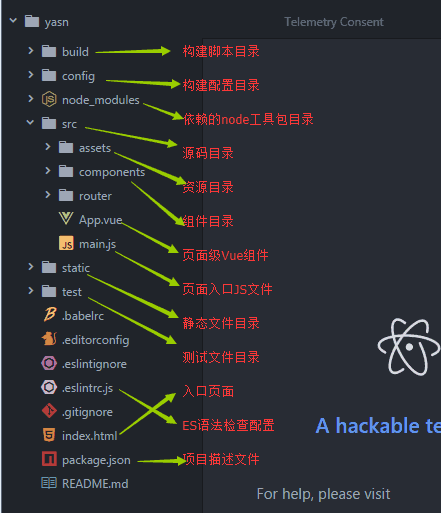
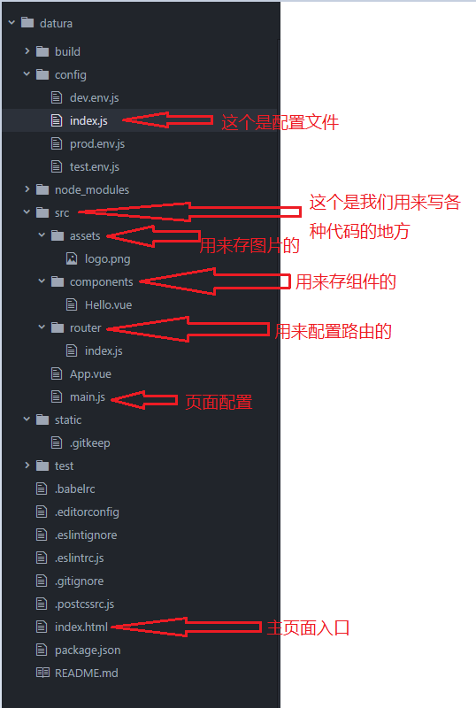

从github上下载的项目要先安装环境，才能跑起来
安装环境 npm install
跑起来 npm run dev
从github上下载的项目要先安装环境，才能跑起来
安装环境 npm install
跑起来 npm run dev
vue-cli?
Vue-cli是Vue的脚手架工具，主要作用：目录结构、代码不熟、热加载以及单元测试
帮助用户快速开始一个Vue项目，其实本质就是给你一套文件结构，包含基础的依赖库，只需要npm install一下就可以安装。
Vue快速入坑——如何搭建vue脚手架以及文档解析


new Vue()和export default{}说明比较
Vue就是一个构造函数，生成的实例是一个巨大的对象，可以包含数据/模板/挂载元素/方法/生命周期钩子等选项.所以在渲染的时候，需要使用Vue实例方式来渲染相应的html页面。
而export default{}这是在复用组件的时候用到的。假设我们写了一个单页组件A文件，而在另一个文件B里面也需要用到它，那么就要用到ES6的import、export语法，在文件A中定义输出接口export XXX，在文件B中引入import XX，然后再生成一个Vue实例 new Vue（{ }），把引入的组件用起来，这样就可以复用组件A去配合文件B生成html页面了。
所以在复用组件的时候，export和new Vue缺一不可
v-text和v-html以及{{}}的区别
vue-router是什么?
vue-router就是路设置，用于设置页面跳转时的路径设置上。地址栏输什么，到什么页面，而且vue-router可以通过html5的history实现单页面应用，不刷新跳转。切地址，只是页面上的组件切换，另外vue-router还可以实现页面间的传参等其他功能。
如何划分组件?
页面功能模块： select、pagenation...
或页面区域: header、footer、sidebar...
Vue组件之间的通信---props
这种只适合父组件传递数据给子组件,子组件给父组件传递使用可以使用v-on事件和$emit,或者$dispatch/$bordercase事件,Vue2.0已经废弃了$dispatch和$boradcast使用更建明清晰的组件通信和状态管理方案,可以使用Vuex